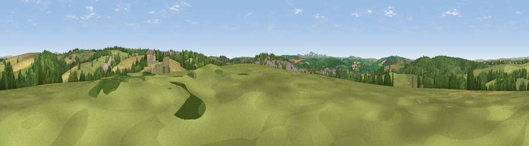

Viewpoint near Bodmin
#22683 in England · top 47% of its area beats it · near Bodmin · access?Where it is
The exact computed spot (SX 06825 68275). Click the marker for map links.
Public access: no public right of way or access land is recorded at this exact spot — it may be on private land. Computed from Natural England's CRoW access layer and OpenStreetMap rights of way — not the legal definitive map. Always verify locally.
The view, rendered

A 360° render of this exact spot computed from the terrain model, tree cover and land cover — summer colours, afternoon light, calibrated against photographs of famous viewpoints. Real trees, hedges and buildings will differ in detail.
The panorama
Grey silhouette: terrain skyline in each direction (720 bearings, Earth curvature and refraction included). Dashed green: skyline with trees (+15 m) and buildings (+8 m) as obstacles. Blue strip: how far the ground is visible on each bearing.
Where the view opens
Wedge length = distance to the farthest visible ground on that bearing (vegetation-aware). Rings at 10, 25 and 50 km.
What fills the view
47% grassland · 31% woodland · 19% cropland · 3% built-up
Angular shares of the visible panorama (visual magnitude), not map area. Landscape diversity 0.50 (0–1 Shannon).
Key numbers
More beautiful places nearby
The staircase of upgrades: each row has a higher view potential than everything closer. Driving times are estimates from straight-line distance, calibrated against real road routing — check an actual route before setting out.
| Place | Direction | Drive | Score |
|---|---|---|---|
| Viewpoint near Helland | NNE · 2 km | ~5 min | 64.4 |
| Viewpoint near Helland | NE · 3 km | ~8 min | 65.1 |
| Viewpoint near Lanivet | S · 5 km | ~11 min | 73.1 |
| St Breock Beacon | W · 10 km | ~19 min | 74.5 |
| St Endellion Hill | NW · 12 km | ~22 min | 75.5 |
| Viewpoint near Stenalees | SSW · 13 km | ~23 min | 88.0 |
| Viewpoint near Crackington Haven | NNE · 27 km | ~43 min | 88.1 |
| Viewpoint near Combe Martin | NNE · 96 km | ~120 min | 88.9 |
50.48237, -4.72426 · source: screening · position refined by local search. Computed location — check access rights before visiting.